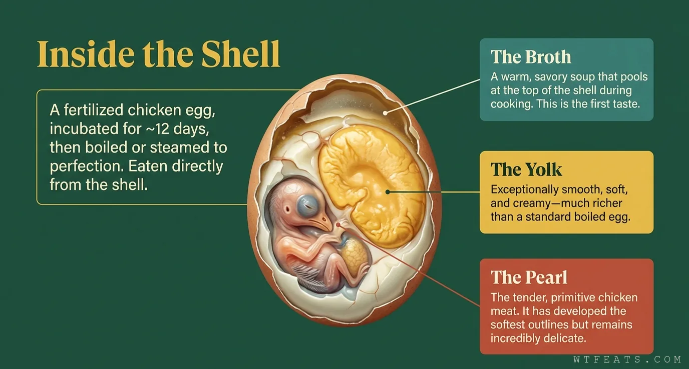

The Pearl

Three layers, one spoon.
Open a huozhuzi and the shell reveals its contents in order. The Broth: a warm, savory soup pooled at the top. The Yolk: smoother and creamier than any boiled egg. The Pearl: tender primitive chicken — head, wings, and feet just formed, bones still soft enough to eat whole.